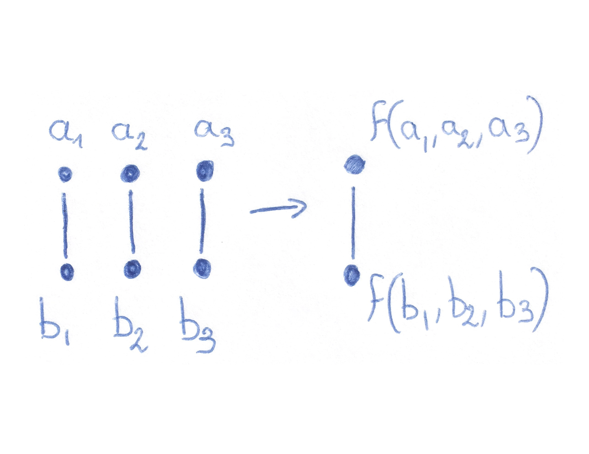
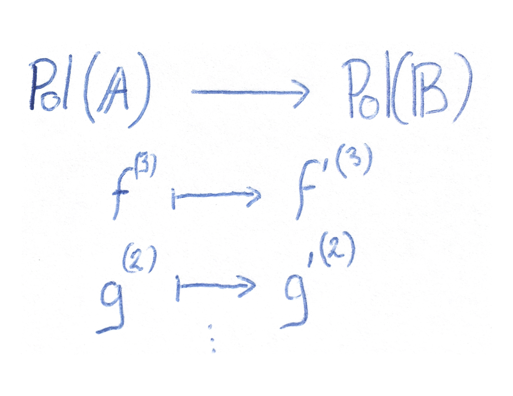

CSPs...
... of finite structures
... of infinite structures
History
- 1993: many natural subsets of NP contain NP-intermediate problems,
the class of finite-domain CSPs does not seem to be one of them. [Feder-Vardi]
- 2000: All known NP-hard CSPs (with finite-domain) obey a certain algebraic property.
Conjecture: there is an algebraic dividing line between P and NP-hard problems.
[Bulatov, Jeavons, Krokhin]
- 2008-2010: several reformulations of the dividing line.
[Maróti-McKenzie, Barto-Kozik, Siggers]
- 2017: Proofs of the algebraic dichotomy conjecture. [Bulatov, Zhuk]
The algebraic method works, what else could it be useful for?
- Promise problems ("hottest" topic),
- Counting,
- Optimisation,
- More decision problems: infinite-domain CSPs.
Symmetries
- Very symmetric solution spaces are easy to search (systems of linear equations, linear programming over $\Bbb R$),
- Lack of symmetries implies hardness (SAT).
Polymorphism
$\Bbb G=(V,E)$, $f\colon V^n\to V$ is a
polymorphism of $\Bbb G$ if

Polymorphisms combine solutions: if $h_1,\dots,h_n\colon \Bbb X\to \Bbb A$ are homomorphisms,
$x\mapsto f(h_1(x),\dots,h_n(x))$ is a homomorphism $\Bbb X\to\Bbb A$.
If $\Bbb A$ has good polymorphisms, every instance has a symmetric solution set.
Algebraic Reductions
Assume we are talking about finite structures.
- $\Pol(\Bbb A)\subseteq\Pol(\Bbb B)$ implies that $\Csp(\Bbb B)$
reduces to $\Csp(\Bbb A)$.
- Only flat identities matter:
\[g(x,y)= g(y,x), h(x,y)= f(y,y,x), \dots\]

If the map
preserves flat identities, then $\Csp(\Bbb B)$ reduces to $\Csp(\Bbb A)$.
Bulatov, Jeavons, Krokhin (2000): all known NP-hard finite $\Csp(\Bbb A)$ are such that $\Pol(\Bbb A)\to\Pol(SAT)$.
The Finite-Domain Dichotomy
Step 1: identify the P/NP-hard borderline
Conjecture (2000) / Theorem (2017)
$\Bbb A$ finite structure. Exactly one of the following holds:
- $\Pol(\Bbb A)\to\Pol(SAT)$ and $\Csp(\Bbb A)$ is NP-complete,
- $\Pol(\Bbb A)\not\to\Pol(SAT)$ and $\Csp(\Bbb A)$ is in P.
Step 2: reformulate the borderline
Theorem
$\Bbb A$ finite structure. Are equivalent:
- $\Pol(\Bbb A)\not\to\Pol(SAT)$
- $\Pol(\Bbb A)$ contains functions that satisfy some nontrivial equations
- $\exists f\in\Pol(\Bbb A)$ s.t.
$f(y,x,\dots,x) = f(x,y,x,\dots,x) =\dots = f(x,\dots,x,y)$
- $\exists s\in\Pol(\Bbb A)$ s.t.
$s(r,a,r,e) = s(a,r,e,a).$
Infinite-domain CSPs:
- Step 0: identify the scope,
- Step 1: identify the borderline,
- Step 2: find a workable version of the borderline.
Topology is relevant
Conjecture [Barto, Opršal, Pinsker]
$\Bbb A$ definable over a finitely bounded homogeneous structure.
- $\Pol(\Bbb A)\to\Pol(SAT)$ uniformly continuously and $\Csp(\Bbb A)$ is NP-complete,
- $\Pol(\Bbb A)\mathrel{\rlap{\hskip .5em/}}\overset{u.c.}{\longrightarrow}\Pol(SAT)$ and $\Csp(\Bbb A)$ is in P.
Theorem [BMOOPW]
There exists an $\omega$-categorical structure such that $\Pol(\Bbb A)\mathrel{\rlap{\hskip .5em/}}\overset{u.c.}{\longrightarrow}\Pol(SAT)$
and $\Pol(\Bbb A)\longrightarrow\Pol(SAT)$.
- For each $\Bbb G$ not 3-colorable, $\Bbb A(\Bbb G)$ that does not satisfy $\Sigma_{\Bbb G}$
- Superpose all these structures $\Bbb A:=\Bbb A(\Bbb G_1)\oplus \Bbb A(\Bbb G_2)\oplus\dots$
$\leadsto\Bbb A$ that does not satisfy any $\Sigma_{\Bbb G}$
so $\Pol(\Bbb A)\to\Pol(SAT)$
- $\Pol(\Bbb A)\mathrel{\rlap{\hskip .5em/}}\overset{u.c.}{\longrightarrow}\Pol(SAT)$